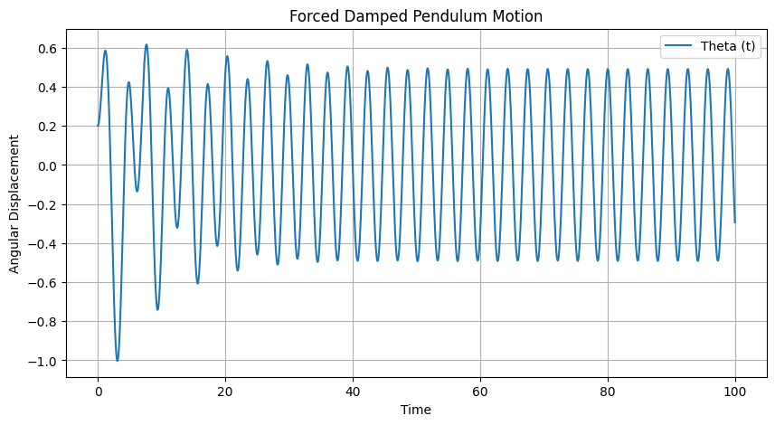
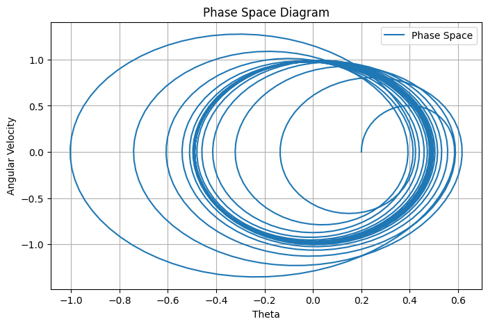
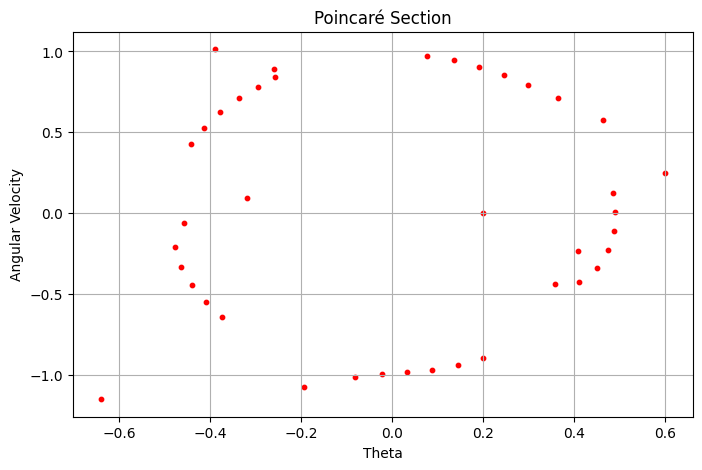
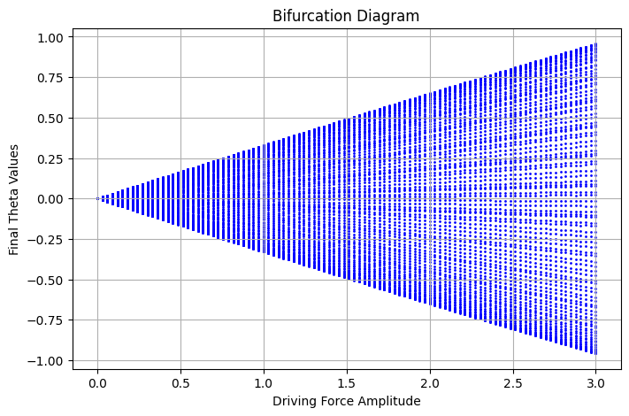

Forced Damped Pendulum: A Comprehensive Study
1. Theoretical Foundation
The forced damped pendulum is a nonlinear dynamical system governed by the differential equation:
where: - \(\theta\) is the angular displacement, - \(b\) is the damping coefficient, - \(\omega_0 = \sqrt{g/L}\) is the natural frequency of the pendulum, - \(A\) is the amplitude of the external forcing, - \(\omega\) is the driving frequency, - \(g\) is the acceleration due to gravity, - \(L\) is the length of the pendulum.
1.1 Approximate Solutions for Small Angles
For small angles (\(\theta \approx \sin\theta\)), the equation simplifies to:
This corresponds to a damped, driven harmonic oscillator with well-known resonance conditions:
At resonance, oscillation amplitude can increase significantly if damping is low.
1.2 Energy Analysis
The total energy of the pendulum system is given by:
Energy dissipation occurs due to damping, while the driving force periodically injects energy.
2. Analysis of Dynamics
The system's behavior varies based on damping, forcing, and initial conditions:
- Low damping, weak forcing: Regular oscillations similar to simple harmonic motion.
- Moderate forcing and damping: Quasi-periodic and periodic oscillations.
- High forcing and low damping: Transition to chaotic motion.
2.1 Phase Space Analysis
The pendulum's state in phase space (\(\theta\) vs. \(\dot{\theta}\)) reveals: - Periodic motion: Closed loops. - Chaotic motion: Complex, fractal-like structures.
2.2 Poincaré Sections
By sampling phase space at discrete intervals, Poincaré sections illustrate order-to-chaos transitions.
2.3 Bifurcation and Chaos
By varying \(A\), the system undergoes period-doubling cascades, leading to chaotic regimes.
3. Practical Applications
- Engineering: Suspension bridges, vibration control.
- Energy Harvesting: Mechanical-to-electrical conversion.
- Biomechanics: Gait dynamics, neural rhythms.
- Electrical Circuits: Analogous behavior in driven RLC circuits.
4. Implementation in Python
4.1 Simulating the Forced Damped Pendulum

4.2 Phase Space Plot

4.3 Poincaré Section

4.4 Bifurcation Diagram

5. Limitations and Future Research
5.1 Model Limitations
- Neglecting complex damping: Real-world damping is nonlinear.
- Non-periodic forcing: More general forcing functions introduce richer dynamics.
- Multi-body interactions: Coupled pendulums exhibit additional complexity.
5.2 Future Research Directions
- Lyapunov exponent analysis for chaos detection.
- Stochastic forcing: Effects of noise and random perturbations.
- Higher-order bifurcation studies in advanced dynamical systems.
Conclusion
This extended analysis of the forced damped pendulum provides theoretical insights, computational tools, and real-world applications. Using Python simulations, we explore resonance, chaos, and bifurcations, demonstrating the pendulum’s role as a fundamental nonlinear system in physics and engineering.